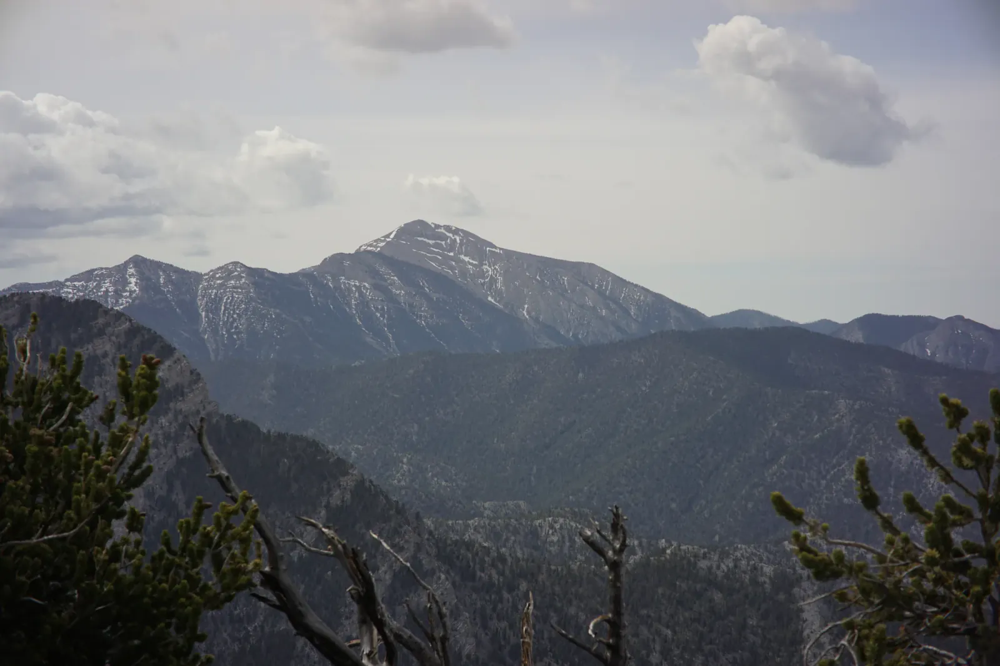

Above the Heat
Summers in Las Vegas are brutal, so when I was stationed there I learned to head for the hills. About an hour from the Strip, the Spring Mountains climb to nearly 12,000 feet. Ecologists call ranges like this sky islands: forested peaks stranded in a sea of desert, cool enough up high to grow pines and aspens that could never survive below. They are so isolated that some of their plants and butterflies exist nowhere else on earth. One night in May I strung my hammock between two pines at the edge of a steep drop-off and watched a dark storm cell drag its rain across the hazy valley far below. Snow still streaked the gullies of the high peak. Around camp, the ridges were full of silver snags, as if an old fire had swept through, with fresh green already pushing up between them.
In September I came back for the summit of Charleston Peak, 11,916 feet and the highest point in the range. The sky was a deep, dry blue, and the American and Nevada flags on the summit mast were snapping straight out in the wind, so pack layers if you go. Below, the Mojave stretched to a pale dry lakebed on the far side of the basin. It was a little funny to stand on a bare gray summit and watch the desert I had been hiding from all summer spread out to the horizon. On the way down, the aspens were just starting to turn, patches of gold between bone-white snags, and in the dim light a deer was browsing the rabbitbrush beside the trail.

Then, in December 2019, a winter storm turned the same range white. Yes, it snows near Las Vegas! Cliffs dissolved into the clouds and snow sifted down through the pines. The dog dove into every drift in reach. Beside the trail, someone had stacked fallen branches into a lean-to, and the dog sat in front of it like a guard. Same range, three seasons, all a day trip from the city. The valley can keep its summers. I'll take the island.